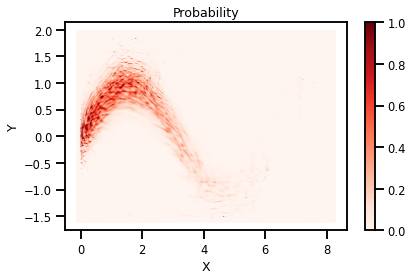

Demo Layers¶
#@title Install Packages
try:
import sys, os
from pyprojroot import here
# spyder up to find the root
root = here(project_files=[".here"])
# append to path
sys.path.append(str(root))
except ModuleNotFoundError:
%%capture
import os
os.system("pip install objax chex")
os.system("pip install git+https://github.com/IPL-UV/rbig_jax.git#egg=rbig_jax")
import sys, os
from pyprojroot import here
# spyder up to find the root
root = here(project_files=[".here"])
# append to path
sys.path.append(str(here()))
# jax packages
import jax
import jax.numpy as np
from jax.config import config
import chex
config.update("jax_enable_x64", False)
import numpy as onp
from functools import partial
# library parameters
from rbig_jax.data import get_classic
from rbig_jax.plots import plot_info_loss, plot_joint, plot_joint_prob
# logging
import tqdm
import wandb
# plot methods
import matplotlib.pyplot as plt
import seaborn as sns
sns.reset_defaults()
sns.set_context(context="talk", font_scale=0.7)
%matplotlib inline
%load_ext autoreload
%autoreload 2
Data¶
# %%wandb
# get data
n_samples = 2_000
n_features = 2
data = get_classic(n_samples)
# plot data
plt.figure()
sns.jointplot(data[:, 0], data[:, 1])
plt.suptitle('Data Domain')
plt.show()
<Figure size 432x288 with 0 Axes>
Initialization¶
First we need to initialize our RBIG method with some parameters. For example, which marginal gaussianization method, what precision do we want, and what rotation method do we want.
method- the method used to marginally transform the data. We have histogram or kde currently implementedsupport_extension- this is the amount we want to extend the support for our marginal distributions. Higher values indicate higherprecision- we use interpolation because it is much faster. So the CDF, PDF and PPF are interpolation schemes. This value will allow one to have more “precision” for the estimated quantities but it will be slower.
X = np.array(data, dtype=np.float32)
/home/emmanuel/.conda/envs/jax_py38/lib/python3.8/site-packages/jax/lib/xla_bridge.py:130: UserWarning: No GPU/TPU found, falling back to CPU.
warnings.warn('No GPU/TPU found, falling back to CPU.')
Multiple Iterations¶
n_samples = 10_000
data = get_classic(n_samples)
X = np.array(data, dtype=np.float32)
Helper Function - Default Block Params¶
from rbig_jax.transforms.block import get_default_rbig_block
# histogram transformation parameters
support_extension = 10
alpha = 1e-5
precision = 100
nbins = int(np.sqrt(X.shape[0]))
eps = 1e-5
n_layers = 30
# initialize with default block parameters
fit_transform_func, forward_f, grad_f, inverse_f = get_default_rbig_block(
n_samples=n_samples,
nbins=nbins,
support_extension=support_extension,
precision=precision,
alpha=alpha,
)
# optional, compiles the function to make it faster
fit_transform_func_jitted = jax.jit(fit_transform_func)
forward_f_jitted = jax.jit(forward_f)
grad_f_jitted = jax.jit(grad_f)
inverse_f_jitted = jax.jit(inverse_f)
%%time
params = []
losses = []
ilayer = 0
X_g = X
while ilayer < n_layers:
# compute
X_g, layer_params = fit_transform_func_jitted(X_g)
# increment
ilayer += 1
params.append(layer_params)
/home/emmanuel/.conda/envs/jax_py38/lib/python3.8/site-packages/jax/lax/lax.py:6190: UserWarning: Explicitly requested dtype float64 requested in array is not available, and will be truncated to dtype float32. To enable more dtypes, set the jax_enable_x64 configuration option or the JAX_ENABLE_X64 shell environment variable. See https://github.com/google/jax#current-gotchas for more.
warnings.warn(msg.format(dtype, fun_name , truncated_dtype))
CPU times: user 2.68 s, sys: 18 ms, total: 2.7 s
Wall time: 2.68 s
sns.jointplot(X_g[:, 0], X_g[:, 1], s=5, color='red')
<seaborn.axisgrid.JointGrid at 0x7fe988666eb0>
Forward Transform¶
from celluloid import Camera
%%time
# initialize figure
fig, ax = plt.subplots()
camera = Camera(fig)
X_g_ = X
# ax.scatter(X_g_[:, 0], X_g_[:, 1], s=1, color="Red")
# ax.set_xlim([X_g_[:,0].min()-.1, X_g_[:,0].max()+.1])
# ax.set_ylim([X_g_[:,1].min()-.1, X_g_[:,1].max()+.1])
# ax.text(0.4, 1.05, f"Layer: {0}", transform=ax.transAxes, fontsize=20)
# camera.snap()
for ilayer, iparam in enumerate(params):
X_g_ = forward_f_jitted(iparam, X_g_)
ax.scatter(X_g_[:, 0], X_g_[:, 1], s=1, color="Red")
ax.set_xlim([X_g_[:,0].min()-.1, X_g_[:,0].max()+.1])
ax.set_ylim([X_g_[:,1].min()-.1, X_g_[:,1].max()+.1])
ax.text(0.4, 1.05, f"Layer: {int(ilayer+1)}", transform=ax.transAxes, fontsize=20)
camera.snap()
animation = camera.animate(500)
# HTML(animation.to_html5_video())
animation.save('./layers.gif')
WARNING:matplotlib.animation:MovieWriter ffmpeg unavailable; using Pillow instead.
CPU times: user 2.51 s, sys: 163 ms, total: 2.67 s
Wall time: 2.23 s

Inverse Transform¶
%%time
X_approx = X_g
for iparam in reversed(params):
X_approx = inverse_f_jitted(iparam, X_approx)
CPU times: user 407 ms, sys: 6.59 ms, total: 413 ms
Wall time: 391 ms
chex.assert_tree_all_close(X_approx, X, rtol=1e-1)
plot_joint(X_approx, kind="kde")
<Figure size 432x288 with 0 Axes>
Probabilities¶
ngrid = 1_000
buffer = 0.1
xline = np.linspace(data[:,0].min()-buffer, data[:,0].max()+buffer, ngrid)
yline = np.linspace(data[:,1].min()-buffer, data[:,1].max()+buffer, ngrid)
xgrid, ygrid = np.meshgrid(xline, yline)
xyinput = np.concatenate([xgrid.reshape(-1, 1), ygrid.reshape(-1, 1)], axis=1)
%%time
X_g = xyinput
X_ldj = np.zeros_like(xyinput)
for iparam in params:
X_g, iX_ldj = grad_f_jitted(iparam, X_g)
X_ldj += iX_ldj
CPU times: user 10.5 s, sys: 405 ms, total: 10.9 s
Wall time: 1.39 s
latent_prob = jax.scipy.stats.norm.logpdf(X_g)
log_prob = (latent_prob + X_ldj).sum(-1)
cmap = "Reds"
probs = np.exp(log_prob)
# probs = np.clip(probs, 0.0, 1.0)
title = "Probability"
fig, ax = plt.subplots()
h = ax.scatter(xyinput[:, 0], xyinput[:, 1], s=1, c=probs, cmap=cmap, vmin=0.0, vmax=1.0)
plt.xlabel("X")
plt.ylabel("Y")
plt.colorbar(h)
ax.set_title(title)
plt.tight_layout()
plt.savefig("./probs.png")
plt.show()

Log Likelihood¶
nll = -log_prob.mean()
print(nll)
inf